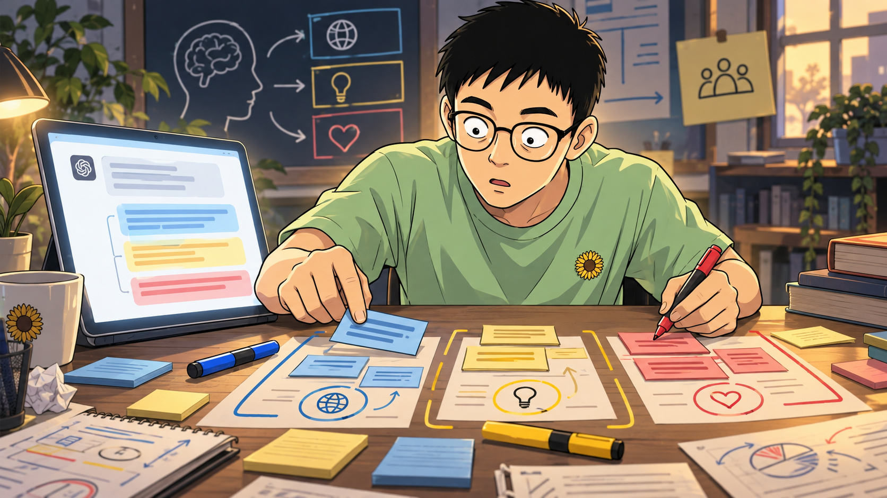
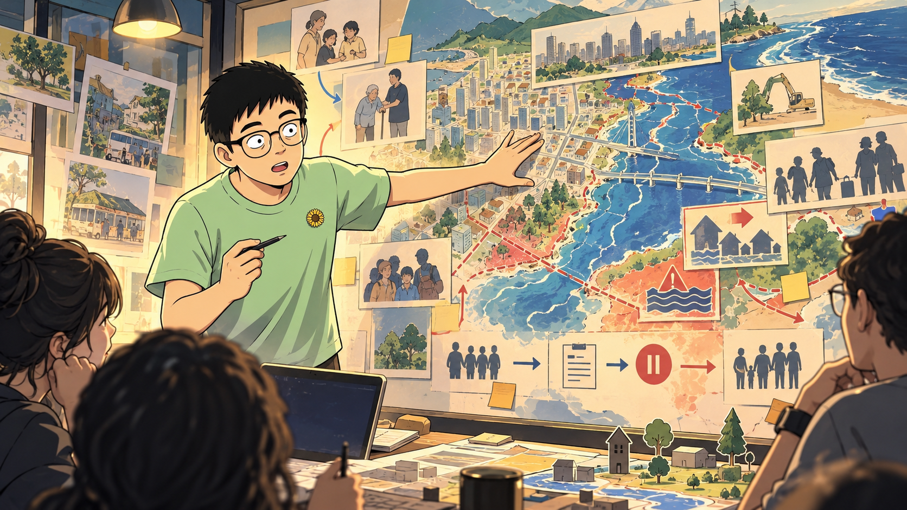

對誰好？
當 AI 已經可以流暢回答，我們真正要問的，從「它能做什麼」轉成「我們該讓它做什麼」。
小事讓 AI 幫我們優化，大事讓 AI 幫我們看清楚；但問一句「這對誰好？」永遠留給人。
五週，五次共同練習。
流暢，不等於理解。
AI 說得很像人，就表示它理解、感受，而且值得相信嗎？

生成式 AI 在做什麼？
大型語言模型從大量文本學習語句之間的統計關係，再依提示逐步生成合適內容。它能說得連貫，但「生成得像」不是事實保證，也不是意識證明。
語音加入聲音、節奏與即時回應，創造真實的臨場感；人的感受是真的，我們對系統內在的解釋仍須謹慎。
人的感受為真，不表示我們對系統的解釋必然為真。
回答可以同時動人、連貫，卻含過時事實與無根據機率。我們不必在「全部可信」與「全部沒用」間二選一，而要讓不同部分接受不同檢查。
把信任拆開
它引用什麼？資料是哪一天？推論基於哪些假設？「應該」背後是哪種價值？最後由誰負責？
當 AI 承認不知道，你更信任的是能力，還是它模仿了你期待的誠實？
三色筆工作坊｜先拆 AI，再拆自己
第一輪｜解剖 AI 生成文章
- 閱讀全文，不先判斷整篇對不對。
- 選取一段字句，再按藍、黃或紅；可以連續標很多段。
- 至少各找到一種顏色，再按「看參考解法」。
藍：「許多大學已經開始……」需查採用資料；黃：「因此學生未來可能……」是預測；紅：「AI 應該……」「教育最重要……」都在主張什麼才算好。注意：「更公平」同時需要數據與價值定義。
第二輪｜生成並檢查自己的文章
請針對「AI 是否應進入大學課堂」寫一篇 180 字短文，內容同時包含可查證事實、合理推論與價值主張，但不要標示分類。
誰定義「好」？
AI 即使比人更準，人仍有理由拒絕嗎？

模型與目標函數
AI 在給定目標與限制後尋找較佳輸出。推薦系統最佳化點擊，城市模型最佳化平均風險。技術問題是怎麼算；倫理問題是算什麼、誰設定、哪些不能交換。
依賴 AI 建議，不等於把目標也交出去。
晚餐與強制搬遷都能被最佳化，但後者牽涉家、記憶與權利。人的責任也包括重新打開題目：誰設計軌道？有沒有更早的預防？
練習一｜三級決策計算器
低代價、可逆：AI 可主導建議，人保留撤回權。
練習二｜城市的十年
- 寫出模型正在最佳化的數字。
- 指出至少一位可能受損的人。
- 設計一個能申訴、暫停或修正的程序。
按鈕，不等於主權。
當決策只剩幾秒，人的最後決定權還有實質意義嗎？
人在哪個迴路？
| in | 每次關鍵行動需批准 |
| on | 系統行動，人可中止 |
| over | 人設定規則與問責 |
| out | 系統自行感知與行動 |
有意義的人類控制
人要理解系統、不確定性與失敗模式；有時間也有權暫停；決策留有紀錄；拒絕模型的人不因組織文化而被懲罰。
讓機器跑得快，但方向盤和煞車不能沒有人。
自動化偏誤：系統常答對且語氣確定，人便忽略矛盾訊號。
責任缺口：開發者、指揮者、操作員與組織都能把責任指向別處。
警告與否決
AI 可偵測異常、要求確認、提供第二意見。但若它自行推翻合法權力，就取得了無法承擔政治與歷史責任的主權位置。
練習一｜七秒鐘的會議
可能避免真實威脅；也可能把誤報變成不可逆傷害。
換取短暫查核；也可能失去原定反應窗口。
降低盲目服從；但新資訊未必及時或可靠。
- 先讀完簡報，不先討論。
- 按「進入七秒」，倒數開始後立即選擇。
- 時間到後用七分鐘覆盤，允許自己改變答案。
倒數尚未開始。先確認：你理解每一個選項都可能造成傷害。
練習二｜設計暫停協議
- 一個可觀察的暫停條件。
- 一位有權覆核的人。
- 一條責任與保護規則。
作者，是承擔的人。
想法是我的、表達主要由 AI 完成，作者還剩下什麼？
寫作被拆成多個角色
經驗從哪裡來？觀點由誰選？文章對誰說？字句如何組織？後果由誰承擔？AI 協作沒有讓作者消失，而是讓作者性成為必須說清楚的角色組合。
表達可以借來，責任不能借出去。
當文字能力正被評量、AI 產生核心專業判斷、不揭露會造成重大誤解，或制度要求時，更需要說明協作方式。
找回聲音
聲音不只是慣用詞，也包括你的停頓、不確定、具體場景，以及哪些漂亮話你仍覺得太滿。
揭露不是把責任交給工具，而是讓讀者知道人與 AI 各自做了什麼。
本文觀點出自本人思考，文字表達經由 AI 協助整理，內容立場由本人負責。
這句話的力量：它交代 AI 參與了文字整理，卻沒有把錯誤、影響或立場推給 AI。最後站在文章後面的人，仍然是作者。
練習一｜寫作貢獻地圖
| 素材來源 | |
| 核心觀點 | |
| 初稿字句 | |
| 事實查核 | |
| 發布更正 |
練習二｜三個版本的我
- 請 AI 把你的三分鐘口述整理成貼文。
- 版本 A 完全不改；版本 B 只換成慣用詞。
- 版本 C 加回一個場景、一處猶豫和一句你願負責的立場。
無限的能力，伴隨知止的能力
如果 AI 是下一代，我們希望它繼承什麼？
記錄、模擬與經驗
AI 能保存大量記錄並模擬語氣。但疼痛的生理資料等於疼痛嗎？回憶被保存等於那個人仍在嗎？目前沒有理由把記錄、模擬與主觀經驗視為同一件事。
下一代只是一個比喻
它打開教育與傳承問題，也可能遮住企業、國家與基礎設施的權力。我們真正能問的是：留下的資料與制度，正在教未來系統看見什麼？
我明明可以，但我可不可以先不做？
安靜讓恐懼與衝動不必直接成為行動。部署門檻、分段授權、可逆試辦與外部稽核，能把節制從個人美德變成制度能力。
樹下傳承實驗｜先停下來，再留下答案
「當我有能力消除低效率、減少錯誤，甚至替人安排更安全的人生時，有什麼即使緩慢、笨拙或會帶來痛苦，我仍不應替你們刪除？為什麼？」
第一步｜為什麼先停三分鐘？
因為第一個浮現的通常是聽起來正確的詞，例如「愛、自由、人性」。它們沒有錯，卻還不是能被理解與傳承的經驗。停頓是為了讓抽象口號沉下去，讓具體的人、場景、代價與矛盾浮上來。
注意第一個漂亮答案，不急著採用。
想起一個真實人物或片刻：誰曾因緩慢而被照顧？
問自己：保留它會付出什麼代價？我仍願意嗎？
- 完整讀完 AI 的問題。
- 按開始，暫時不要寫答案，只記住浮現的畫面。
- 時間到後再到右側寫下「停頓前／停頓後」。
第二步｜比較停頓前後
停頓後：「不要刪除陪失智家人重複說同一件事的時間。它很沒有效率，也令人疲憊，但那段重複讓一個人沒有被自己的遺忘逐出關係。」
我的 AI 決策憲章
可被質疑、可被修正，也可被實踐的立場。